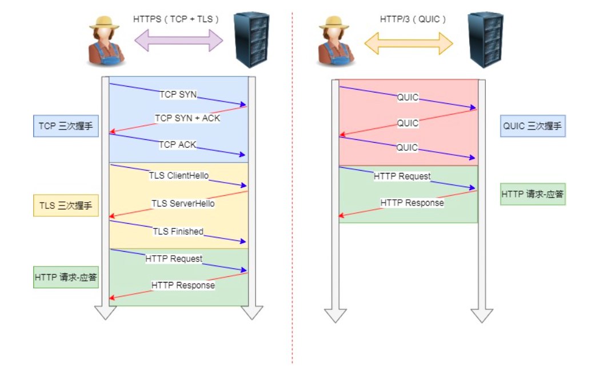
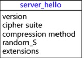

概述
- 本篇总结http协议相关部分
http各个版本协议的进化历程
- 首先来张整体的说明图
HTTP/1.0 到 HTTP/1.1
-
1 早期 HTTP/1.0 性能上的一个很大的问题，那就是每发起一个请求，都要新建一次 TCP 连接(三次握手)，而且是 串行请求，做了无谓的 TCP 连接建立和断开，增加了通信开销。
-
- 为了解决上述 TCP 连接问题，HTTP/1.1 提出了
⻓连接的通信方式，也叫持久连接。这种方式的好处在于减少了 TCP 连接的复建立和断开所造成的额外开销，减轻了服务器端的负载。
- 为了解决上述 TCP 连接问题，HTTP/1.1 提出了
-
- 持久连接的特点是，只要任意一端没有明确提出断开连接，则保持 TCP 连接状态。

-
2 HTTP/1.0 不支持pipeline , HTTP/1.1 支持
-
3 HTTP/1.0 有7层和4层的队头阻塞问题
-
- HTTP/1.1解决了7层的队头阻塞问题.
-
- 因为http协议是
「请求 - 应答」模式. 当顺序发送的请求序列中的一个请求因为某种原因被阻塞时，在后面排队的所有请求也一同被阻塞了，会招致 客户端一直请求不到数据，这也就是「队头阻塞」。好比上班的路上塞⻋。
- 因为http协议是
- 总之 HTTP/1.1 的性能一般般，后续的 HTTP/2 和 HTTP/3 就是在优化 HTTP 的性能。
HTTP/1.1 到 HTTP/2
HTTP/1.1 有两个主要的缺点：安全不足和性能不高
1 头部压缩
-
- HTTP/2 会压缩头(Header)如果你同时发出多个请求，他们的头是一样的或是相似的，那么，协议会帮你消除重 复的部分。
-
- 这就是所谓的
HPACK 算法:在客户端和服务器同时维护一张头信息表，所有字段都会存入这个表，生成一个索引号，以后就不发送同样字段了，只发送索引号，这样就提高速度了。
- 这就是所谓的
2 二进制分帧(减少二进制转化为明文环节)
-
首先，HTTP2 没有改变 HTTP1 的语义，只是在应用层使用二进制分帧方式传输。因此，也引入了新的通信单位：
帧、消息、流。 -
HTTP/2 不再像 HTTP/1.1 里的纯文本形式的报文，而是全面采用了二进制格式，头信息和数据体都是二进制，并 且统称为帧(frame):
头信息帧和数据帧。 -
-
- 收到报文后，无需再将明文的报文转 成二进制，而是直接解析二进制报文，这增加了数据传输的效率.
2.1 为什么要二进制分帧
- 2.1.1 计算机层面无需再将二进制转化为明文, 提升数据的处理效率.
- 2.1.2 最重要的是，为
多路复用提供了底层支持。
3 数据流
-
HTTP/2 的数据包不是按顺序发送的，同一个连接里面连续的数据包，可能属于不同的回应。因此，必须要对数据包做标记，指出它属于哪个回应。
-
每个请求或回应的所有数据包，称为一个数据流( Stream )。每个数据流都标记着一个独一无二的编号，其中规定客户端发出的数据流编号为奇数，服务器发出的数据流编号为偶数 - 客户端还可以指定数据流的优先级。优先级高的请求，服务器就先响应该请求。
4 什么是多路复用
一个域名对应一个连接，一个流代表了一个完整的请求-响应过程。帧是最小的数据单位，每个帧会标识出该帧属于哪个流，流也就是多个帧组成的数据流。多路复用，就是在一个 TCP 连接中可以存在多个流。
- HTTP/2 是可以在一个连接中并发多个请求或回应，而不用按照顺序一一对应。
- 移除了 HTTP/1.1 中的串行请求，不需要排队等待，也就不会再出现7层
「队头阻塞」问题，降低了延迟，大幅度提高了连接的利用率。 -
- 举例来说，在一个 TCP 连接里，服务器收到了客户端 A 和 B 的两个请求，如果发现 A 处理过程非常耗时，于是就 回应 A 请求已经处理好的部分，接着回应 B 请求，完成后，再回应 A 请求剩下的部分。
-

5 服务器推送
-
HTTP/2 还在一定程度上改善了传统的
「请求 - 应答」工作模式，服务不再是被动地响应，也可以主动向客户端发送消息。 -
- 举例来说，在浏览器刚请求 HTML 的时候，就提前把可能会用到的 JS、CSS 文件等静态资源主动发给客户端，减少延时的等待，也就是服务器推送(Server Push，也叫 Cache Push)。
HTTP/2 到 HTTP/3
1 HTTP/2存在的问题
HTTP2 的缺陷 - 1 TCP 以及 TCP+TLS 建立连接的延时
- 2 TCP(4层)的队头阻塞并没有彻底解决
2 HTTP/3 如何改进
- 2.1 HTTP/2 建连延时
TCP 连接需要和服务器进行三次握手，即消耗完 1.5 个 RTT 之后才能进行数据传输。
TLS 连接有两个版本—— TLS1.2 和 TLS1.3，每个版本建立连接所花的时间不同，大致需要 1~2 个 RTT。
RTT（Round-Trip Time）:往返时延。表示从发送端发送数据开始，到发送端收到来自接收端的确认（接收端收到数据后便立即发送确认），总共经历的时延。
- 2.2 HTTP/3 改进
HTTPS 要建立一个连接，要花费 6 次交互，先是建立三次握手，然后是 TLS/1.3 的三次握手。QUIC直接把以往的 TCP 和 TLS/1.3 的 6 次交互合并成了 3 次，减少了交互次数。

-
2.2 HTTP/2 4层队头阻塞问题没有彻底解决
-
- 为什么呢? 很简单应用层通过
数据流Stream来进行交互, 4层根本不关心上层. 因此一旦出现4层丢包, 比如 一共7个包 1,2,3,4,5,6,7 ,4这个包丢了, 那么客户端可以选择确认3, 然后服务器也可以只重传4, 但是客户端这边只能向上层交付1,2,3里包含的应用数据,4、5、6、7必须等4重传回来了才能往上层交付. 这就是分层带来的问题.
- 为什么呢? 很简单应用层通过
-
- QUIC怎么解决? 很简单就是当4层丢包时,上层知道是哪个
Stream丢的包. 因此可以先处理没有发生丢包的Stream.
- QUIC怎么解决? 很简单就是当4层丢包时,上层知道是哪个
-
- 带来什么问题? 对于不支持QUIC协议的网络设备、计算机, 就只能当UDP来处理.
3 HTTP/3 其他的一些改进
- TLS3 升级成了最新的
1.3版本(原来是有1.2和1.3版本)，头部压缩算法也升级成了QPack。
什么Pipeline和 WebSocket
HTTP pipeline介绍
-
http管线化是一项实现了多个http请求不需要等待相应的应答就能够写进同一个socket的技术.仅有http1.1规范支持http管线化,1.0并不支持.
-
采用管线化的请求会对页面载入时间产生动态的提高.尤其是当通过高延迟的网络,例如通过卫星网络连接.
-
即使通常情况下,可以通过同一个tcp数据包发送多个http请求,http管线化向网络上发送更少的tcp数据包,以便减轻网络负载.
-
只有幂等的请求能够被管线化,例如get和head请求.post请求不应该被管线化.新建立连接上的请求因为无法判断源服务器(代理服务器)是否支持http1.1协议,也不应该被管线化处理.所以,仅在重用已经成功建立的持久化连接的情况下,才可以使用管线化.
Keepalive 和 Pipeline 和 WebSocket比较
| 名称 | 原理简述 | 实践（常用软件相关实践） |
|---|---|---|
| http keepalive | 在同一个tcp连接上，进行多次http请求和响应。避免每一个http资源，都要建立一次tcp连接。 | 默认情况下，NGINX、Apache等都支持 |
| http pipeline(管线化) | 在同一个tcp连接上，对pipeline来说，客户端不必等到第一个请求处理完后，就可以马上发起第二个请求。得到两个响应的时间可能能够达到1RTT。 | 只有http 1.1才支持,http 1.0不支持。NGINX默认支持http pipeline |
| websocket | 解决http协议默认情况下的“被动性”，也就是只能客户端发起请求，服务器响应。服务器不能主动发消息给客户端。 | 类似Java Socket，由Http请求模拟实现的socket。 |
http各个header含义大集合
SSL协议握手过程
1 总体说明
ssl/tls协议，总体分2个阶段：
| 阶段 | 说明 |
|---|---|
| 1 身份验证阶段（握手阶段） | 采用非对称加密 |
| 2 数据传输阶段 | 采用对称加密 |
2 细分4个阶段
2.1 Client Hello
2.2 Server Hello

2.3 客户端回应
2.4 服务端回应
2.5 小结
一些实战技巧
- 统计整个http路径中各个阶段的耗时, 明确服务器处理耗时、网络传输耗时
-
- curl 指令是一个功能非常强大的指令，也可以统计 HTTP 请求各个阶段的耗时，使用如下：
curl -o /dev/null -s -w "time_namelookup: %{time_namelookup}\ntime_connect: %{time_connect}\ntime_appconnect: %{time_appconnect}\ntime_redirect: %{time_redirect}\ntime_pretransfer: %{time_pretransfer}\ntime_starttransfer: %{time_starttransfer}\ntime_total: %{time_total}\n" "https://www.baidu.com"
-
- 参数解析：
-o /dev/null 把返回值丢掉，不用输出
-s 静默输出，不输出进度条
-w 按指定格式打印信息，其中包含一些特定的参数：
time_namelookup：从开始到域名解析完成时的耗时
time_connect：从开始到 TCP 连接建立完成的耗时
time_appconnect：从开始到 TLS 连接建立完成的耗时
time_redirect：多次重定向（如果有）的耗时
time_pretransfer：从开始到准备发送请求消息前的耗时
time_starttransfer：从开始到服务器准备返回第一个字节时的耗时
time_total：整个 HTTP 请求操作耗时
-
- 输出结果如下：
time_namelookup: 0.002275
time_connect: 0.013750
time_appconnect: 0.039952
time_redirect: 0.000000
time_pretransfer: 0.040041
time_starttransfer: 0.051713
time_total: 0.135286
-
- 通过上述输出，我们可以计算出各个步骤的时间，例如：
DNS 解析：2ms
TCP 连接：time_connect(13ms) - time_namelookup(2ms) = 11ms
SSL 握手耗时: time_appconnect(39ms) - time_connect(13ms) = 26ms
服务器处理：time_starttransfer(51ms) - time_pretransfer(40ms) = 11ms